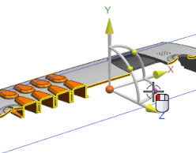
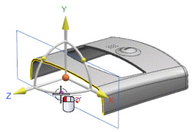
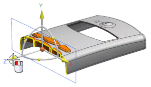
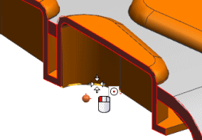
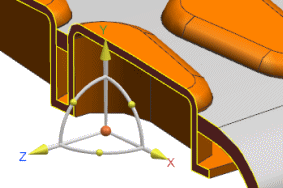

In the Assembly Navigator, right-click Sections and choose New Section.
Drag the Rotate about YC-axis handle – 90 degrees around the Y-axis.


Select the Z axis handle and drag the section to the left until just over half of the second row of buttons displays.

On the Selection bar, set the snap point filter to Arc/Center .
In the Offset group, with Specify Transform highlighted, select the arc at the inside bottom of the end button as shown below.


The section now cuts through the center of this row of buttons.